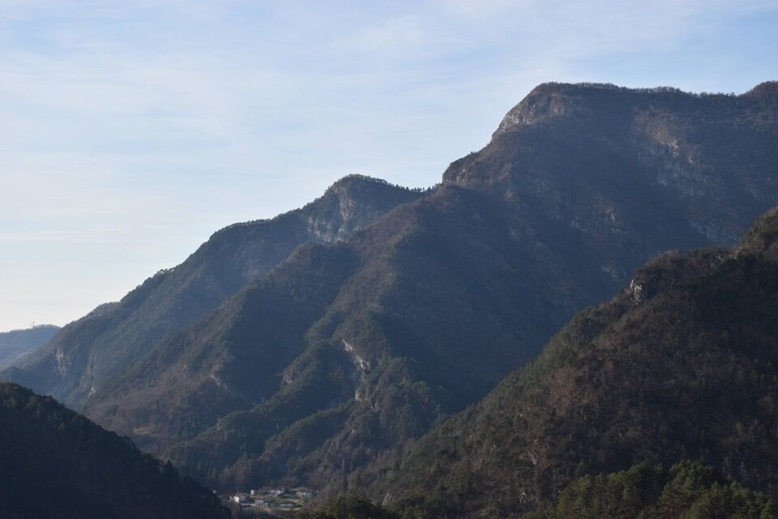
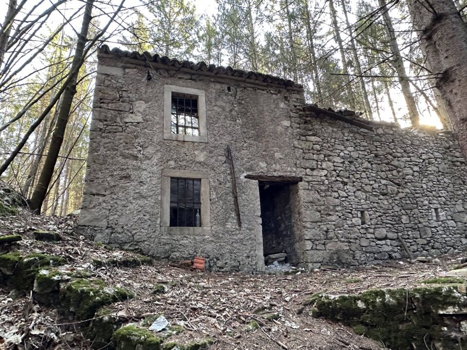
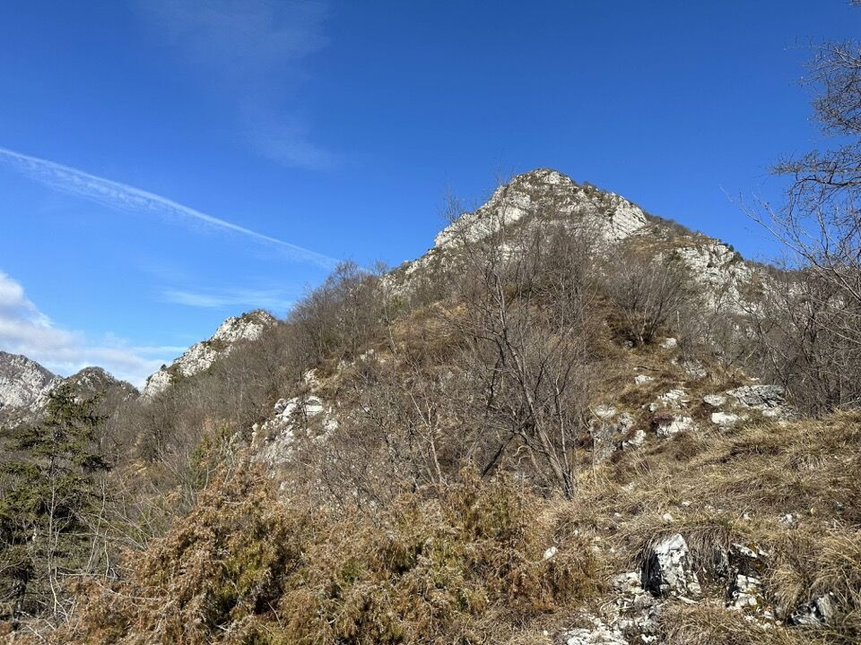
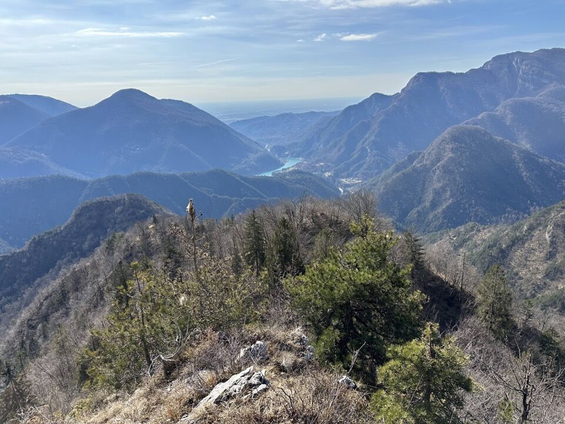
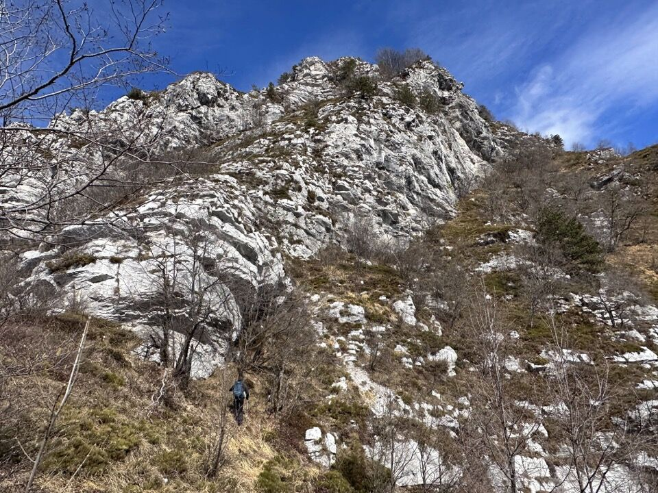
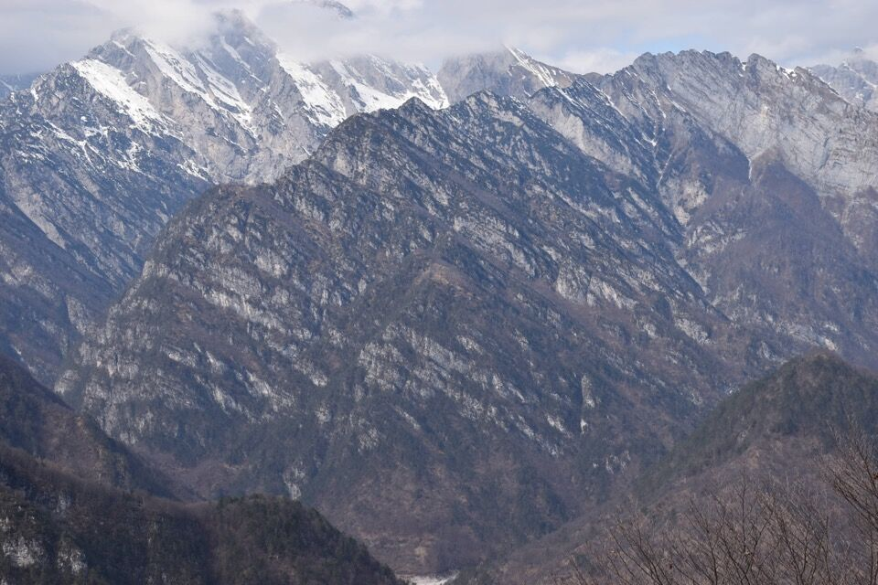
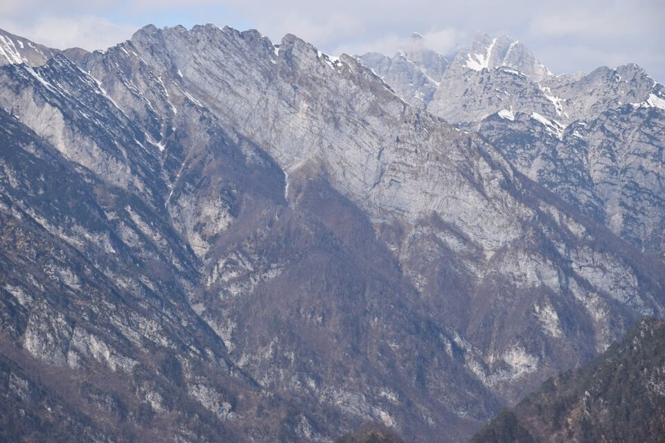
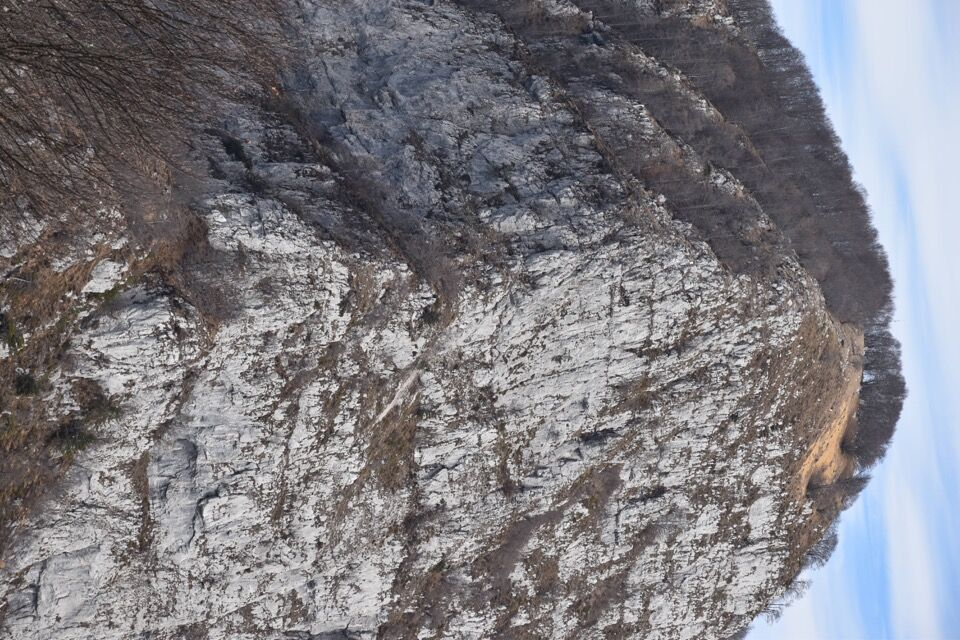
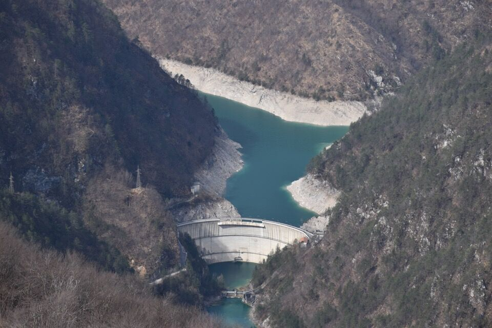
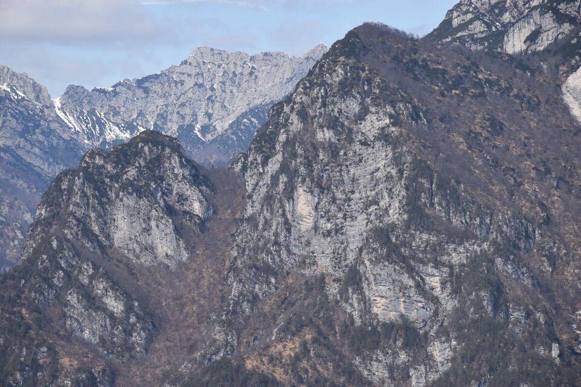

Partiamo da Val. In foto Faidona con la cresta nord-est del monte Rossa; un occhio attento può riconoscervi anche la Cengla dal Von.
Da Val prendiamo il sentiero ancora in buono stato che conduce a Cjamerada, luogo incredibile.
Da Cjamerada iniziamo a percorrere la cresta sud su tracce di animali, trovando numerosi tagli.
Usciamo dal bosco e la vista si apre, da una parte verso il Pizzo Lòvet e il Cuel de la Luna, dall'altra verso il lago di Redona.
Cerchiamo i passaggi migliori, guidati dalle tracce delle bestie, per portarci sotto le pareti e traversare verso sinistra.
La vista verso sud è sempre magnifica.
Finalmente arriviamo sopra la rampa finale; gli ultimi metri prima della cima sono i più impegnativi.

Io in cima.

Verso il Corda con le sue attraenti stratificazioni; a sx il Buttignan e dietro il Corda si riconosce il Dosàip.
Cualina Bassa e Alta, anch'esse caratterizzate da interessanti cenge, con la cresta che le collega a cima Leadicia, a destra. Fra le nubi, Caserine e Burlatòn.
Versante sud di cima Leadicia; dietro, fra le nubi, s'intravedono Vetta e Cengle Fornezze.
Il famigerato spigolo ovest del Cuel da la Luna.
Punto panoramico sul versante ovest del Pizzo Lòvet: a vederlo dal lago del Ciul (in centro foto) non gli si darebbe una lira in quanto tutto boscoso, invece il panorama è davvero bello!
Il lago del Ciul.
La forcella denominata Vual da li Chan, fra la Giuedola a sx e il Cuel Flurît a dx, prima tappa per chi sale al Frascola dalla diga del Ciul. Notare a dx anche la pala boscosa dove sale il troi dal Partigian.
Il versante sud del Frascola, che è la cima più alta a destra; le altre sono le anticime q1895 e q1925, e fra di esse s'intravede il Rugòn, che dalla forca del Cuel Flurît (circa) porta fra le due antecime. In primo piano, quasi invisibile se non fosse per le solari cenge meridionali, il Ciuculon dai Alaç.
Il versante sud del Giavons, con evidentissimo il rug dal Giavons.